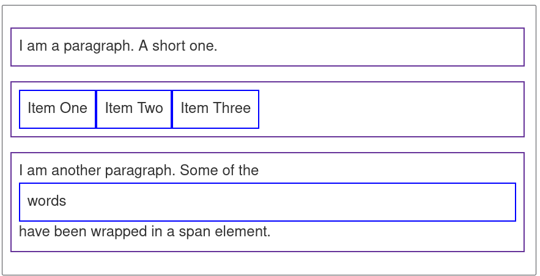
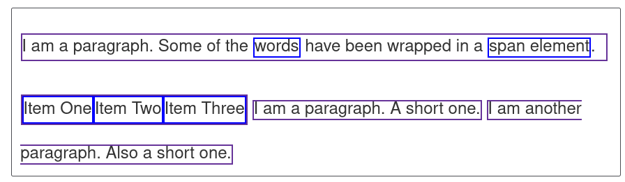
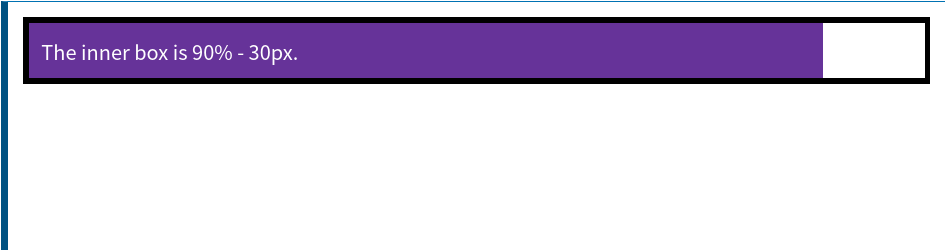

进一步的 CSS
本文按照 Mozilla 贡献者基于 CC-BY-SA 2.5 协议发布的以下文章改编:
- https://developer.mozilla.org/zh-CN/docs/Learn/CSS/First_steps/How_CSS_is_structured
- https://developer.mozilla.org/zh-CN/docs/Learn/CSS/Building_blocks/Cascade_and_inheritance
- https://developer.mozilla.org/zh-CN/docs/Learn/CSS/Building_blocks/The_box_model
现在，你应该已经很了解什么是 CSS 了，对于 CSS 的各种细节也有了一定的把握。我们这一节要告诉你怎么完整地使用 CSS 。
其他添加 CSS 的方法
之前我们提到了另外两种方法的存在，现在也稍微提下。
内部 CSS
在 HTML 的 <head> 里面用 <style> </style> 来包裹你的 CSS。
1 |
|
在单文件的时候这个可能会比较方便，但是如果你的网站有很多 HTML ，一个个这么改过来不现实，所以看情况吧。
内联 CSS
在单文件的时候这个可能会比较方便，但是如果你的网站有很多
内联 CSS 直接添加在元素上面。比如这样子：
1 |
|
非常不建议这么做，一个个改元素会成为你的噩梦的。偷懒一时爽，维护火葬场，切记切记。
层叠与继承
可能接下来的内容会偏向抽象一些，不过也是可以轻松理解的内容，对以后处理实际问题有很大帮助。
一个例子
在写一个项目的时候，我们总是不可避免地会遇到一些问题，比如下面这个例子。
现在有这样的一个元素：
1 | <p class="special">What color am I?</p> |
然后有这样的 CSS：
1 | p { |
或者 CSS 是这样的：
1 | .special { |
请问它会变成什么样子？
我们立刻就会讲解这些细节。
层叠
CSS 元素的顺序很重要。浏览器在渲染 CSS 的时候，是从上到下进行解析的，同级的选择器指定的元素，如果样式发生了重复，就会使用后面的元素覆盖掉。就像涂颜料，前面都盖掉了，只有最后的才会看见。
刚刚那个例子的第一个，就是典型的层叠。所以自然颜色就变成了黄色。
优先级
那么第二个 CSS 要怎么处理呢，就要考虑优先级的问题了。
一般情况下面，越特殊的选择器，优先级就越高。在这里，.special 作为一个类名选择器，比 p 这样的元素选择器更加特殊，所以优先级更高。CSS 内置的优先级比较复杂，就不详细展开了。
当然以后这类问题实在不知道的话，可以自己直接在浏览器里面试一下。这也是常用的手段，比起看一些晦涩的文档，也不失为一种更好的选择。
继承
有时候，子元素会继承父元素的一部分属性。最典型就就是 font 系列。比方说你写了这样的 HTML 和 CSS：
1 | <p> 我是一段文字，里面有<b>粗体</b>，<i>斜体</i>。 </p> |
1 | p { |
显然，里面的粗体和斜体都会和 <p> 中其他字有一样的字体。这样可以免掉很多麻烦。不过更加常用的方式就是直接给 <body> 设置这些属性，可以给包含在里面的全部内容继承。
有些属性是不会继承的，是否继承之类的问题都会在文档里面写明，用到的时候查下文档就好。
不想继承的话，一般是把这个属性覆盖了就好了，具体控制继承的方式，也可以看下文档。
盒模型
在 CSS 中，所有的元素都是套在盒子（box）里面的。盒子是渲染的基本单位，是处理元素的时候用到的。我们有时候有排版网页的需求，比方说放上一张图片，指定宽度高度，或者是一块一块地排上一些方格，比如写博客的时候一篇篇文章排下来之类的，都会用到盒子。
盒子分成两种，块级盒子 (block box) 和 内联盒子 (inline box) 。
让我们先开始了解盒模型。
盒模型
完整的 CSS 盒模型，是盒子里面套着盒子的，这些不断嵌套的盒子构成了 CSS 的基本框架。从里到外包含这些部分：
- Content box: 这个区域是用来显示内容，大小可以通过设置 width 和 height.
- Padding box: 包围在内容区域外部的空白区域； 大小通过 padding 相关属性设置。
- Border box: 边框盒包裹内容和内边距。大小通过 border 相关属性设置。
- Margin box: 这是最外面的区域，是盒子和其他元素之间的空白区域。大小通过 margin 相关属性设置。

在标准模型中，如果你给盒设置 width 和 height，实际设置的是 content box, 也就是内容那个盒子。 padding 和 border 再加上设置的宽高才一起决定整个盒子的大小。比方说可以这样设置：
1 | .box { |
这里最内层的 content box 是分别设置宽高的，而其他都指定宽度（相当于边框的粗细）。在页面中显示出来的是最内层和边框，别的相当于占着的空白。合起来在页面里面占的宽度是 350 + 25 + 25 + 5 + 5 = 410px，高度是 150 + 25 + 25 + 5 + 5 = 210px。
margin 不计入实际大小 —— 当然，它会影响盒子在页面所占空间，但是影响的是盒子外部空间。盒子的范围到边框为止 —— 不会延伸到 margin。如果两个相邻元素都在其上设置外边距，并且两个外边距接触，则两个外边距中的较大者保留，较小的一个消失——这叫外边距折叠。

其实更好的方法是使用相对大小来设置，比如设置百分数 50% 或者相对字体的大小 2em 之类。因为这样可以在多种尺寸的屏幕上面显示地正常一些。具体可以从相应式布局了解有关细节。通常， 1em 等于 16px。
块级盒子和内联盒子
这两种盒子会在页面流（page flow）和元素之间的关系方面表现出不同的行为:
一个被定义成块级的（block）盒子会表现出以下行为:
- 盒子会在内联的方向上扩展并占据父容器在该方向上的所有可用空间，在绝大数情况下意味着盒子会和父容器一样宽
- 每个盒子都会换行
- width 和 height 属性可以发挥作用
- 内边距（padding）, 外边距（margin） 和 边框（border） 会将其他元素从当前盒子周围“推开”
除非特殊指定，诸如标题( <h1>等)和段落(<p>)默认情况下都是块级的盒子。
如果一个盒子对外显示为内联（inline），那么它的行为如下:
- 盒子不会产生换行。
- width 和 height 属性将不起作用。
- 垂直方向的内边距、外边距以及边框会被应用但是不会把其他处于 inline 状态的盒子推开。
- 水平方向的内边距、外边距以及边框会被应用且会把其他处于 inline 状态的盒子推开。
用做链接的 <a> 元素、 <span>、 <em> 以及 <strong> 都是默认处于 inline 状态的。
我们通过对盒子 display 属性的设置，比如 inline 或者 block ，来控制盒子的外部显示类型。
盒子排版示例
现在我们看下一些关于 block box 的例子。
第一个例子是一个段落，我们给它设置了边框。因为它是一个块级元素，所以它被换了个行。
第二个例子是一个列表，它被设置了一个 display: flex，意思是里面的元素按照弹性布局，所以里面的各个 li 就会被从左到右排成一行。不过它本身仍然是一个块，和段落一样，最外面也是换了一个行的。
第三个例子是演示内联元素如何变成块级。里面有两个 元素。正常情况下是 inline，但是其中一个加了 block 类，设置属性 display: block，成了块级元素。

1 | p, ul { |
1 | <p>I am a paragraph. A short one.</p> |
我们可以看到 inline 元素在下面例子中的表现。 <span> 在第一段默认是内联元素所以不换行。
还有一个 <ul> 设置为 display: inline-flex，使得在一些flex元素外创建一个内联框，表现成内联。
最后设置两个段落为 display: inline。 inline flex 容器和段落在一行上而不是像块级元素一样换行。

1 | p, ul { |
1 | <p> |
在后面的内容中会遇到诸如弹性盒子布局的内容；现在需要记住的是， display 属性可以改变盒子的外部显示类型是块级还是内联，这将会改变它与布局中的其他元素的显示方式。
再谈属性和值
我们之前已经了解过，CSS 的声明是由属性和值组成的。格式是 属性: 值。
每个属性都有定义的值，对应特定的样式。
如果属性未知或某个值对给定属性无效，则声明被视为无效，并被浏览器的 CSS 引擎完全忽略。
接下来就要再提一下属性，讲一些之前没有提到的内容。
一些重要属性
试试看这些属性吧，查找 MDN 的文档，并且试着使用它们。
- font-size
- width
- background-color
- color
- border
函数
虽然大多数值是相对简单的关键字或数值，但也有一些可能的值以函数的形式出现。函数由函数名和括号组成，括号内是函数的参数。比如我们之前提到的 color 里面的 rgba() 就是一个很典型的 CSS 函数。这里我们演示一下 calc() 函数。这个函数允许您在 CSS 中进行简单的计算，例如：
1 | <div class="outer"><div class="box">The inner box is 90% - 30px.</div></div> |
1 | .outer { |

在上面的 calc() 示例中，我要求此框的宽度为包含块宽度的 90% ，减去 30 像素。这不是我可以提前计算的东西，只是在 CSS 中输入值，因为我不知道 90% 会是什么。MDN 上的相关页面将有使用示例，这样您就可以看到函数是如何工作的。
还有 transform, background-image, color 这些也用了函数，可以看文档了解一下。
@规则
到目前为止，我们还没有遇到 @rules (读音 “at-rules”)。 这是一些特殊的规则，为 CSS 提供了一些关于如何表现的指导。 有些 @rules 规则很简单，只有规则名和值。例如，要将额外的样式表 (假定叫做 styles2.css ) 导入主 CSS 样式表，可以使用 @import:
1 | @import 'styles2.css'; |
最常见的 @rules 之一是 @media ，它允许您使用 媒体查询 来应用 CSS。意思是仅当某些条件成立(例如，当屏幕分辨率高于某一数量，或屏幕宽度大于某一宽度时)的时候才会用到这个规则。这样可以用来适应不同的设备（比如竖屏和横屏）。
在下面的 CSS 中，我们将给 <body> 元素一个粉红色的背景色。但是，我们随后使用 @media 创建样式表的一个部分，该部分仅适用于视口大于 30em 的浏览器。如果浏览器的宽度大于 30em，则背景色将为蓝色。
1 | body { |
速记属性
有时候一个个指定属性是一件很烦的事情，现在我要设置一个 padding 的上下左右边距：
1 | .box{ |
CSS 本就有些无聊，要是再加上这些杂七杂八的东西不会乱成一团就怪了。好在为了程序员们的眼睛和头发，有个叫做速记属性的东西。它可以使代码更整洁，也节约你的打字时间。上面的例子可以打成这样：
1 | .box{ |
警告：虽然速记经常允许您忽略值，但它们会将不包含的任何值重置为它们的初始值。这确保使用了一组合理的值。但是，如果您期望速记只更改传入的值，这可能会使您感到困惑。
注释和空白
CSS 中的注释以 /* 开头，以 */ 结尾。注释内容不会被 CSS 渲染。
添加注释是一件有用的事情，这样做可以帮助您在过了几个月后回来修改或优化代码时了解它们是如何工作的，同时也便于其他人理解您的代码。有时候测试的时候也会把一些属性包在注释里面禁用掉，用来排除干扰，也就是常说的“注释掉”。
比如这就是典型的用法：
1 | /*.special { |
空白是指实际空格、制表符和换行。以与 HTML 相同的方式，浏览器往往忽略 CSS 中的大部分空白；许多空白只是为了提高可读性。
小结
本章内容有点多有点杂，在此稍微梳理一下。
应用 CSS 有三种方法。外部 CSS，内部 CSS， 内联 CSS。推荐使用的是外部 CSS，因为方便维护和复用。
如果多个选择器选中了同一个元素，这些选择器跟着的规则也发生冲突的话，CSS 将会根据优先级处理。通常是后面的覆盖前面的，特殊的覆盖一般的，最后显示出来网页的样子。
CSS 在渲染的时候使用盒模型，这个模型把元素看成是一个一个的盒子，将它们排布起来。盒子分成两种，一种是块级盒子，另一种是内联盒子。块级盒子通常会自带换行，并且拥有完整的边框。
属性除了普通的值，还可以有函数。函数通常指定一些比较复杂的逻辑。除了普通的属性之外，还有 @ 属性，用来进行一些特殊的操作。
空白和注释是让 CSS 提高可读性的重要方式。
结尾
现在你应该知道了 CSS 的一些工作原理，下面我们就进入实战部分吧。
练习
下面就是实战了，我也不想搞练习，就跳过吧。